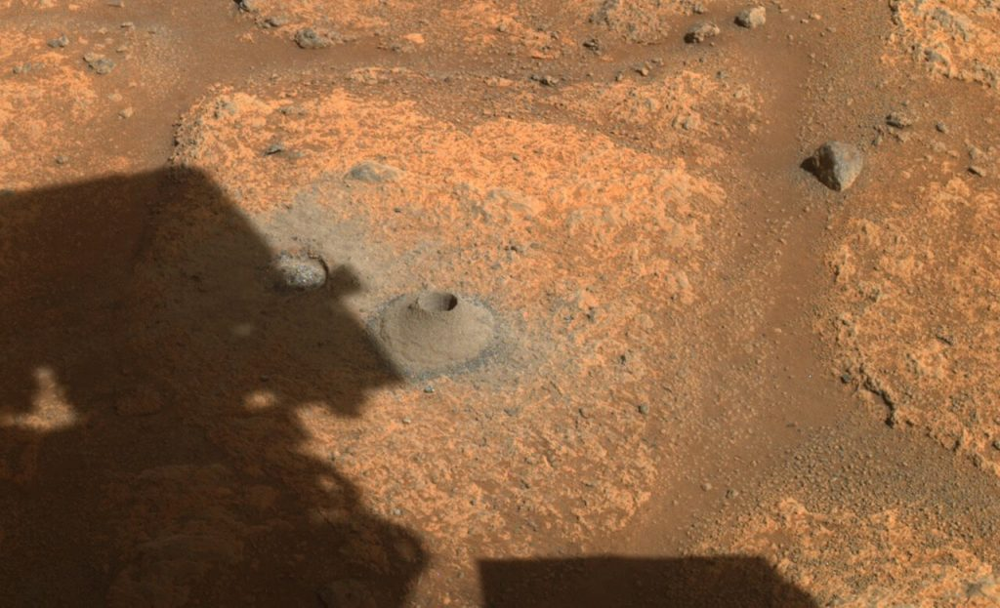

ဒီ မားစ်ရိုဗာဟာ ယဇီးရိုး (Jezero Crater) ဥက္ကာကြွင်း ဟောင်းကြီးနေရာမှာ ရှိနေခဲ့တဲ့ ရေကန်ဟောင်းကြီးရဲ့ ကြမ်းပြင်မှာ ကျောက်နမူနာ တူးယူ စုဆောင်းဖို့ ကြိုးစားခဲ့တာပဲ ဖြစ်ပါတယ်။ ဒီကြမ်းပြင်ကို လွန်နဲ့ တူးဖေါ်ပြီး လက်ချောင်းလောက် အရွယ်ရှိတဲ့ ကျောက်သား နမူနာ ရယူဖို့ ကြိုးစားခဲ့ရာမှာ မအောင်မြင်ခဲ့ဘူးလို့ သိရပါတယ်။ ဒီနမူနာကို ကမ္ဘာမြေကို ပြန်ပို့ဖို့ ရည်ရွယ်ပြီး တူးဖော်ခဲ့တာ ဖြစ်ပါတယ်။
ကျောက်နမူနာ ယူတာ မအောင်မြင်ပေမယ့် တူးဖော်တဲ့ လွန်သွားကတော့ အလုပ်လုပ်နေတယ်လို့ ပြောပါတယ်။ တူးဖော်ရရှိတဲ့ ကျောက်နမူနာကို သတ္တုဗူးထဲ ထည့်တဲ့နေရာမှာ မအောင်မြင်တာလို့ နာဆာက ပညာရှင်တွေက ယူဆကြပါတယ်။
“ကျွန်တော်တို့ မူလ မျှော်လင့်ခဲ့ သလိုတော့ တစ်ချက်ထဲ ကျွင်းဝင်တာမျိုး မဟုတ်ဘူးပေါ့ဗျာ။ ဒါပေမယ့် အသစ်တွေ ကြိုးပမ်းတဲ့ အခါမျိုးမှာ အခက်အခဲ ဆိုတာကတော့ ရှိတတ်တာပါပဲ” ဟု နာဆာမှ စီမံကိန်း တာဝန်ခံ သောမတ်စ် ဇာဘူချန် (NASA’s science mission chief Thomas Zurbuchen) ကပြောပါတယ်။

“စိတ်ဓါတ်တော့ နည်းနည်း ကျချင်စရာပေါ့ဗျာ။ ဒီလောက် ရှုပ်ထွေးတဲ့ စက်ကြီးတစ်ခုလုံးကလဲ ကောင်းကောင်း အလုပ်လုပ်နေတယ်။ အင်ဂျင်နီယာတွေဖက်ကလဲ လိုလေသေးမရှိဘူး။ ဒါပေမယ့် အင်္ဂါဂြိလ်ကြီးက ကျွန်တော်တို့ ဖက်မှာ မရှိဘူးဗျာ” လို့ နာဆာ သိပ္ပံပညာရှင် တစ်ဦးဖြစ်သူ ကင်ဖာလီ (NASA project scientist Ken Farley) ကပြောပါတယ်။
နာဆာက ဒီ မားစ်ရိုဗာကို အသုံးချပြီး ကျောက်သား နမူနာ ၃၁ ခုထိ ရယူဖို့ ရည်ရွယ်ထားတာပါ။ ရရှိလာတဲ့ နမူနာတွေကို အထူးစီမံထားတဲ့ လေလုံ သတ္တုဗူးတွေနဲ့ ထည့်သွင်းပြီး နောက် ၁၀ နှစ်အတွင်းမှာ နောက်ထပ် လွှတ်တင်မယ့် အာကာသယာဉ်တွေကနေ ပြန်လည် သိမ်းဆည်းပြီး ကမ္ဘာမြေကို ပြန်ပို့ဖို့ ရည်ရွယ်ထားတာ ဖြစ်ပါတယ်။ ဒီ ကျောက်နမူနာ တွေကို ပြန်ယူမယ့် အာကာသယာဉ်ကို ၂၀၃၀ ခန့်မှာ လွှတ်တင်နိုင်ဖို့ ရည်ရွယ်ထားပါတယ်။
Reference: Mars rover comes up empty in 1st try at getting rock sample